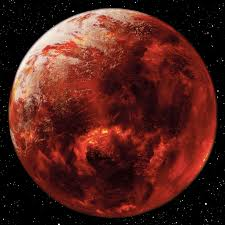

A Little Intro to Anakin
Anakin was not always a Sith. He was a Jedi at one point and was
trained by Obi Wan Kenobi. He was born on Tatooine by his mom, Shmi Skywalker,
even though she did not have a partner. Anakin was hoped by many to be The Chosen One because of
an old prophecy that said The Chosen One would bring an end to the Sith and bring balance to the Force.
They thought he was The Chosen One because the prophecy also said they would be born with no father, and Anakin
was born without a father and seemingly was a miracle to Shmi. He then went on to train as a Jedi before being manipulated by
Palpatine into joining the Dark side with the promise he could save the ones he loved. A few weeks prior to this, he
had visions of his wife, Padme Amidala, dying during child birth. He claimed that he wasn't going to let the same
thing happen to her when talking about the same thing happened with his mom. In the end, he ended up getting all his limbs cut off,
left to burn on the shores of Mustafar, and ended up contributing to the death of Padme. He then became
Darth Vader, ruling under Palpatine for 23-24 years. He then saw his son, Luke Skywalker
being tortured by Palpatine's devastating Force lightning, so he picked Palpatine up and threw
him into a Reactor Shaft, killing both Palpatine and himself in the process, but ultimately saving his son and
bringing balance to the Force.
 Mustafar
Some Sources I Used
These Will Take You to Different Sites
screenrant's Top 30 Most Powerful Sith Sitegamerant's Top 28 Most Powerful Jedi
wookiepedia's Page on Anakin Skywalker
may4thbewithyou's Page on Pre-Suit Vader
starwars.com's Page on The Clone Wars Anakin Skywalker
imdb's Page on Pictures from Attack of the Clones
movie-characters' Page on Darth Vader
insidethemagic's Page on Vader from the Kenobi Series
ign's Page on Vader from the Rebels series
colliders' Page on Darth Vader after he turns back to Anakin at the End of Return of the Jedi
nerdist's Page on Anakin in the World Between Worlds from the Ahsoka series
thedirect's Page on Anakin in his Clone Wars armour from the Ahsoka series
zhodani's space background
wookiepedia's page on Mustafar
wookiepedia's page on Sith Holocrons
ign's page on Tatooine
wookiepedia's page on Shmi Skywalker